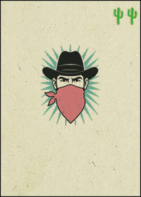
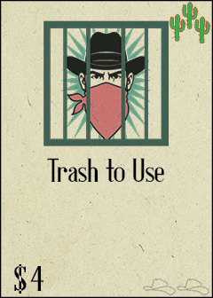
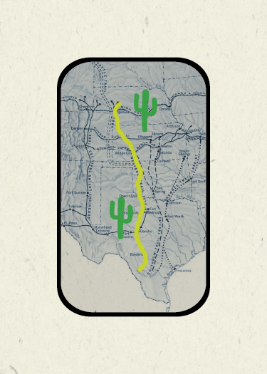

Rules
Setup
- Each player begins with a personal 10-card starter deck.
- For a 2-player game, put away all cards marked "3+P" or "4+P".
- For a 3-player game, put away all cards marked "4+P".
- For each Act, build a face-down solitaire pyramid with all cards for that Act (see the cowboy hat number at bottom-right = Act 1/2/3).
- The top row has 1 card, and each row below adds one more:
- 5 rows for 2 players
- 6 rows for 3 players
- 7 rows for 4 players
- Flip the bottom row of cards face-up.
Sequence of Play
1. Draw Phase
- All players draw cards from the top of their personal deck, one at a time. (Players may draw simultaneously.)
- Players may stop drawing at any time.
- If a player draws 3 or more Bandits, they bust immediately — their turn is over and all drawn cards go to the discard pile.
- When your draw pile is empty, shuffle your discard pile to form a new draw pile. Cut one card from top to bottom after shuffling.
2. Buy Phase
- Players who did not bust add any Cows they drew this round to their Herd.
- Each non-busted player may buy one card from the Store using the total coins drawn this round. Place the purchased card and all drawn cards into your discard pile.
- When a card is purchased or burned, reveal any cards underneath that are no longer covered.
- Instead of buying, a player may burn one card — removing it from the game and revealing card(s) underneath.
Buy Order
- The player with the most $ chooses who buys first.
- If tied: most Cows this round.
- If still tied: most drawn cards.
- If still tied: compare sell value of drawn cards in order.
- If still tied: rock-paper-scissors.
Buying proceeds clockwise from the first player.
- Once all eligible players have bought/passed, discard all drawn cards and begin a new round.
- When the last card is bought or burned from the Store, the round ends immediately. All non-busted players still score Cows, even if they didn't get to buy.
- Set up Acts 2 & 3 the same way. Shuffle all discarded cards back into your draw deck.
3. Winning
The player with the most Cows in their Herd at the end of Act 3 wins!
Symbols on Cards

$ — Value that can be spent to purchase other cards.

Cow — Add the number of Cows shown to your Herd (if you don't bust).

Bandit — Caution! Draw 3 Bandits and you bust immediately.

Jail — Trash to negate 1 Bandit (doesn't count toward your total this round).

Lose Cow — Subtract 1 Cow from your Herd (if you don't bust).
Card Backs & Cacti
 1 Cactus = Safe
1 Cactus = Safe

2 Cacti = Mixed
 3 Cacti = High Risk / High Reward
3 Cacti = High Risk / High Reward
The number of cacti is visible on both the front and back of each card.
Errata
- You may freely check the card backs in your draw pile.
- You may not look through your discard pile.
- Trash = Return card to the game box (removed from game).
- Draw = Draw from the top of your personal deck.
- "Return card(s) to top of deck before buy phase" means do not use any $ or Cows from that card before returning it.
- "Look at top 3 cards" is done after drawing.
- "Trash to Jail a Bandit" cards must be used before busting.
- If you run out of cards in both your draw and discard pile, stop drawing for the round.
Strategy Tips
- Pay attention to card back colors:
- 1 Cactus — generally safe (fewer or no Bandits).
- 2 Cacti — moderate risk (may contain 1 Bandit).
- 3 Cacti — high risk (may contain 1–2 Bandits).
- Tracking which cards you haven't drawn gives you a big edge. Start by remembering whether you've drawn your double-Bandit card yet.
- Balance the risk of busting against the reward of gaining more $ and Cows.
- It's not always best to draw as many cards as possible. If you have enough $ for this round, consider stopping to set up a strong hand next round.